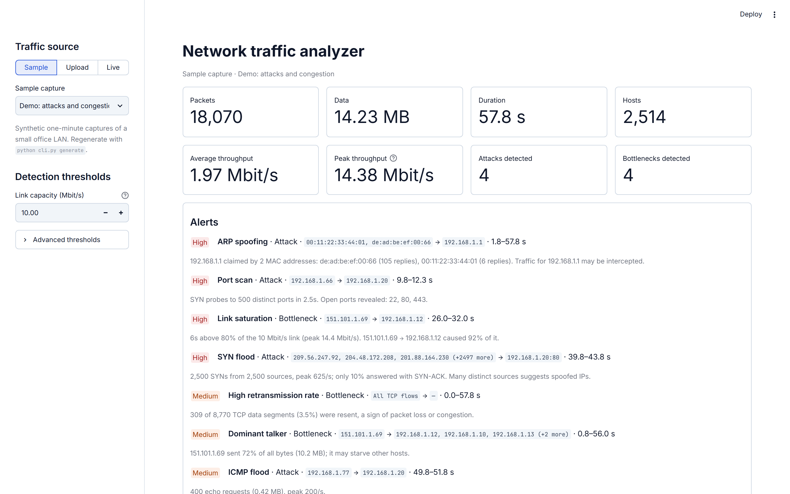
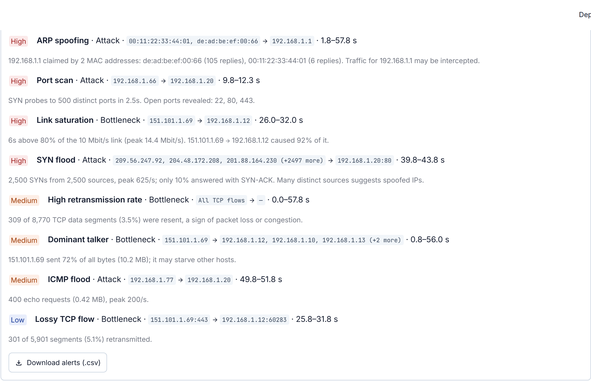
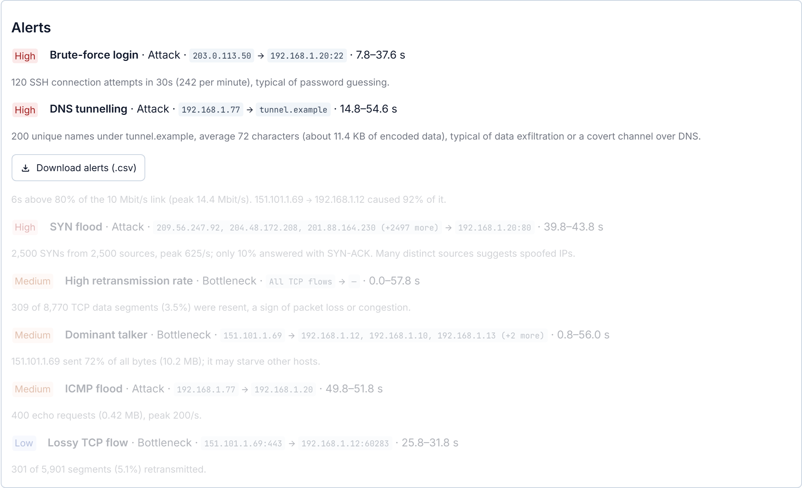
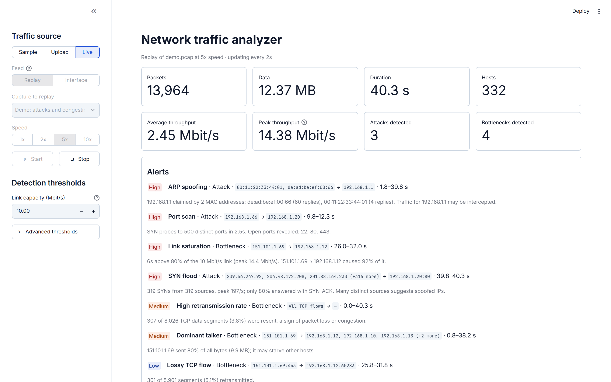
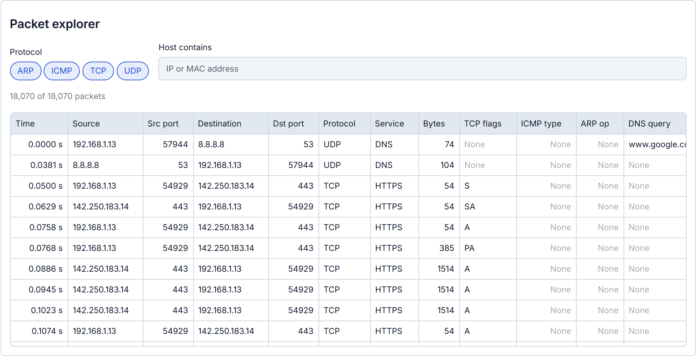

This project develops a network traffic monitoring and analysis system that identifies network bottlenecks, abnormal traffic patterns and security threats, and explains each finding in plain language. The system captures packets from a live network interface or reads saved Wireshark/tcpdump captures, and extracts per-packet features such as source and destination IP address, protocol, ports, TCP flags, sequence numbers, packet size and timestamps.
The extracted traffic is analysed for bandwidth utilisation, protocol distribution, top talkers and TCP retransmissions, and checked by nine detection rules. Three rules find bottlenecks (link saturation, a dominant talker, high retransmission rate); six find attacks (port scanning, SYN flooding, ICMP flooding, ARP spoofing, brute-force login and DNS tunnelling). Each rule is tied to an observable protocol behaviour, so every alert states the hosts, the time window and the numbers that triggered it. A Streamlit dashboard and a command-line tool display traffic statistics and alerts, and a real-time monitor re-analyses traffic every 2 seconds.
The system was evaluated on three one-minute captures with known ground truth: clean traffic and seven injected events. It detected all seven events with no false alarms, reached a per-second accuracy of 0.999, precision of 0.992, recall of 1.000 and F1-score of 0.996, and reported each attack within 0.25 to 6 seconds of attack traffic. The solution improves network visibility, supports early threat detection and helps administrators maintain network performance and security.
Keywords: network traffic analysis, intrusion detection, packet capture, Scapy, port scan, SYN flood, ARP spoofing, DNS tunnelling, network monitoring.
Computer networks carry every service an organisation depends on, so two questions matter constantly to a network administrator: is the network fast enough, and is anyone attacking it? A congested link slows every user behind it, and an attack such as a SYN flood or ARP spoofing can take a server offline or silently redirect traffic through an attacker's machine.
Packet analysers such as Wireshark capture every frame on a link, but they leave interpretation to a human, who cannot read thousands of packets per second. Network traffic analysis closes that gap: it turns raw packets into measurements (throughput, protocol mix, who talks to whom) and into decisions (this host is scanning, this link is saturated).
This project builds such a system for a small office LAN. It reads packets live or from capture files, measures the traffic, and applies nine detection rules, each based on a specific protocol behaviour: TCP's three-way handshake and retransmissions, ICMP echo requests, ARP's unauthenticated replies, and DNS query names. Results are shown in a web dashboard and a command-line tool, including a real-time monitor. Because real networks are rarely attacked on cue, the project also generates realistic test captures with known attacks, which makes the evaluation repeatable and gives exact ground truth.
The rest of this report reviews related work (Chapter 2), defines the problem and objectives (Chapter 3), compares existing systems with the proposed one (Chapter 4), presents the architecture (Chapter 5) and detection methods (Chapter 6), describes the implementation (Chapter 7), and reports results and performance (Chapters 8 and 9). Chapter 10 concludes and outlines future work.
Network traffic analysis has developed along two lines: rule-based (signature) systems that match known patterns, and anomaly-based systems that learn what normal traffic looks like and flag deviations. This project sits in the first line but borrows the idea of measured thresholds from the second.
Roesch introduced Snort as a lightweight, libpcap-based network intrusion detection system for small TCP/IP networks, built from a packet decoder, a rule-driven detection engine and an alerting subsystem [1]. Paxson's Bro (now Zeek) separates an event engine, which turns packets into higher-level events, from a policy script interpreter that decides what is suspicious, and is designed for real-time monitoring of a network link [2]. Both remain widely used; their main costs are rule maintenance and a steep learning curve for small sites.
Instead of inspecting every packet, routers can export flow records summarising each conversation, as standardised in NetFlow version 9 [3]. Flow records scale to large networks and are well suited to bandwidth accounting and top-talker reports, but they discard per-packet detail such as TCP flags and ARP contents, which are needed to recognise SYN floods or ARP spoofing.
Public labelled datasets support research on learned detectors. CIC-IDS2017 contains realistic benign traffic and eleven attack scenarios [4]; UNSW-NB15 combines modern normal and attack behaviour across nine attack categories and 49 features [5]. Classifiers such as Random Forest and unsupervised methods such as Isolation Forest [6] are common choices. Sommer and Paxson, however, argue that machine learning is rarely used in operational intrusion detection because attacks are rare, normal traffic is highly variable, errors are expensive and model decisions are hard to explain to operators [7].
Several of the attacks studied here are defined by protocol specifications. SYN flooding exploits the state a server keeps for half-open TCP connections [8]; ARP accepts replies without authentication, which enables spoofing [9]; ICMP echo requests are the basis of ping floods [10]; and TCP's retransmission of unacknowledged segments with the same sequence number makes packet loss directly observable [11].
Table 2.1: Comparison of traffic analysis approaches
| Approach | Example | Strengths | Limitations |
|---|---|---|---|
| Signature / rule-based IDS | Snort [1], Zeek [2] | Mature, real-time, explainable alerts | Large rule sets to maintain; complex for small sites |
| Flow-based monitoring | NetFlow v9 [3] | Scales to large networks; good for bandwidth reports | Loses packet detail needed for SYN-flood or ARP checks |
| Machine-learning anomaly detection | Classifiers on CIC-IDS2017 [4] or UNSW-NB15 [5]; Isolation Forest [6] | Can find unseen attack types | Needs labelled data; false alarms and opaque decisions in practice [7] |
| This project | Nine protocol-based rules with measured thresholds | Explainable alerts with evidence; one tool for bottlenecks and attacks; runs on a laptop | Fixed thresholds; header inspection only |
The gap this project addresses is a single, lightweight tool that covers both performance problems and attacks for a small LAN, explains every alert in plain language, and can be evaluated against exact ground truth.
Traditional network monitoring relies on manual inspection of packet captures or on large rule sets that are hard to maintain, which makes it difficult to notice performance bottlenecks and attacks while they are happening. Small networks in particular lack an affordable tool that continuously monitors traffic, recognises abnormal patterns, identifies likely security threats and explains each finding clearly enough for an administrator to act on it. There is a need for an automated system that does this on ordinary hardware and whose detection accuracy can be measured.
The system targets Ethernet LANs carrying IPv4 or IPv6 traffic and inspects packet headers (Ethernet, ARP, IP, TCP, UDP, ICMP, DNS). It does not decrypt or inspect encrypted payloads such as HTTPS content. Detection uses explainable rules with thresholds the administrator can adjust; machine-learning classification is discussed as future scope.
The proposed system combines packet-level analysis, traffic statistics and nine explainable detection rules in one lightweight Python tool. Every alert carries its evidence (hosts, time window and the numbers that crossed a threshold), so an administrator can verify it immediately. A real-time monitor and a dashboard make results visible as they happen, and a built-in generator of labelled test traffic allows accuracy to be measured.
Table 4.1: Existing systems compared with the proposed system
| Feature | Packet analyser | Signature IDS | Flow monitor | Proposed system |
|---|---|---|---|---|
| Automatic attack detection | No | Yes | Limited | Yes (6 attack types) |
| Bottleneck detection | No | No | Partly (bandwidth) | Yes (3 bottleneck types) |
| Explains each alert with evidence | No | Rule message only | No | Yes |
| Real-time monitoring | Capture only | Yes | Near real time | Yes (2 s refresh) |
| Dashboard and charts | Basic | Add-ons | Yes | Yes |
| Setup effort for a small LAN | Low | High | Medium | Low (one script) |
| Built-in accuracy evaluation | No | No | No | Yes |
The system is a pipeline: every traffic source is converted into the same packet table, which two analysis stages then read. Because live traffic, saved files and test captures share one path, they are analysed identically.
The real-time monitor sits between a source and the parser only in live mode; a saved file is parsed in one pass. The detection stage is highlighted because it is the core of the project.
Table 5.1: System modules
| Module | Description | Source file |
|---|---|---|
| Packet Capture | Captures packets from a network interface with Scapy (Npcap or libpcap) for a fixed time or continuously. | nta/capture.py, nta/monitor.py |
| Data Preprocessing | Reads pcap/pcapng files, decodes each frame and orders packets by timestamp; in live mode, malformed packets are skipped. | nta/parser.py |
| Feature Extraction | Extracts time, length, MAC and IP addresses, protocol, ports, service, TCP flags, sequence number, payload length, ICMP type, ARP fields and DNS query name. | nta/parser.py |
| Traffic Analysis | Computes bandwidth utilisation per second, protocol and service mix, top talkers, conversations and TCP retransmissions. | nta/analysis.py |
| Attack Detection | Applies nine rules for bottlenecks and attacks and produces alerts with severity and evidence. | nta/detectors.py |
| Visualisation | Interactive dashboard with KPI cards, alert list, charts and a packet explorer; real-time view. | streamlit_app.py |
| Report Generation | Text reports, CSV alert export and JSON summary from the command line. | cli.py |
| Test Data Generation | Builds labelled one-minute captures (normal, demo, advanced) with known injected events. | nta/samplegen.py |
| Evaluation | Scores detections against ground truth: accuracy, precision, recall, F1 and detection delay. | evaluate.py |
Each packet becomes one row of a pandas DataFrame with 18 columns: time, t (seconds since capture start), length, source and destination MAC, source and destination IP, protocol, service, source and destination port, TCP flags, sequence number, payload length, ICMP type, ARP operation, ARP sender MAC and DNS query name. Each alert records its category (Attack or Bottleneck), kind, severity (High, Medium or Low), source, target, first and last time seen, and a plain-language explanation.
Detection is rule-based: each of the nine detectors measures one protocol behaviour and raises an alert when it crosses a threshold. Thresholds are defaults for a small LAN on a 10 Mbit/s link and can be changed in the dashboard.
Table 6.1: Bottleneck detection rules
| Rule | Algorithm | Default threshold | Rationale |
|---|---|---|---|
| Link saturation | Group packets into 1-second bins, convert bytes to Mbit/s, merge consecutive busy seconds into one episode and name the flow with the most bytes in it. | A second above 80% of link capacity (10 Mbit/s) | Queues and latency grow before a link reaches 100%. |
| Dominant talker | Sum bytes sent per host and compute each host's share. | One host sends 50% or more of all bytes (once 1 MB is captured) | One host can starve the others on a shared link. |
| Retransmissions | Mark a TCP data segment as retransmitted when the same (source, destination, ports, sequence number) was already seen. | 3% or more of segments, overall or in one flow of 100+ segments | TCP resends lost segments; loss on a busy path means congestion [11]. |
Table 6.2: Attack detection rules
| Rule | Algorithm | Default threshold | Rationale |
|---|---|---|---|
| Port scan | Count distinct destination ports in SYN-only packets per (source, target) pair; list ports that answered SYN-ACK as open. | 20 or more ports on one host | Clients use one or two service ports; scanners probe many. |
| SYN flood | Count SYN-only packets per second per (target, port); keep only the burst seconds; measure the share answered with SYN-ACK. | 100 or more SYNs per second | Half-open connections exhaust the server's backlog [8]. |
| ICMP flood | Count ICMP echo requests (type 8) per second per target. | 50 or more per second | Normal ping sends one request per second [10]. |
| ARP spoofing | Group ARP replies (op 2) by sender IP and count distinct sender MACs; the alert starts when the second MAC first appears. | 2 or more MACs for one IP | ARP replies are unauthenticated, so any host can claim the gateway [9]. |
| Brute-force login | Count SYN-only packets per (source, target, port) for login services: FTP, SSH, Telnet, POP3, IMAP, MySQL, RDP, VNC. | 20 or more connection attempts | A person logs in once; a password-guessing tool reconnects every few guesses. |
| DNS tunnelling | Group DNS queries by (client, base domain) and count unique names and their average length. | 30 or more unique names averaging 40+ characters | Normal lookups reuse a few short, cached names; tunnels encode data in long one-off names. |
Input: packet table P, threshold R (SYNs per second)
S <- packets in P with protocol TCP and flags exactly SYN
for each (target, port) in S:
count SYNs per 1-second bin
burst <- bins with count >= R
if burst is not empty:
G <- SYNs of (target, port) inside the burst bins
answered <- SYN-ACKs sent by target from port during G
raise alert(High, sources of G, target:port,
|G| SYNs, peak rate, |answered| / |G|)
The other rules follow the same pattern: filter the relevant packets, aggregate them with pandas group-by operations, compare against the threshold, and only then examine the few suspicious groups in detail.
A background thread collects packets into a rolling buffer of the newest 200,000 packets, from a network card or a capture replayed at 1x to 10x speed. Every 2 seconds the dashboard converts only the new packets into rows and re-runs all nine detectors, so an attack appears within one refresh of crossing its threshold.
The sample generator records the exact start and end time of every injected event. An event counts as detected when an alert of the same kind overlaps its window. For the per-second evaluation, each second of each capture is labelled positive or negative per event type, from both the ground truth and the alerts, giving a confusion matrix (TP, FP, FN, TN) and these metrics:
Accuracy = (TP + TN) / (TP + TN + FP + FN) Precision = TP / (TP + FP)
Recall = TP / (TP + FN) F1 = 2 × Precision × Recall / (Precision + Recall)
The system is written in about 1,900 lines of Python, with a further 130 lines of automated tests, and runs on an ordinary Windows, Linux or macOS laptop.
Table 7.1: Technologies and tools
| Category | Tools used |
|---|---|
| Programming | Python 3.11 |
| Packet capture | Scapy 2.8 (live capture and decoding), Npcap or libpcap driver; Wireshark-compatible pcap/pcapng files |
| Data analysis | pandas 3.1, NumPy |
| Detection | Nine rule-based detectors with adjustable thresholds (no training data required) |
| Visualisation | Streamlit 1.67 dashboard with Apache ECharts charts |
| Testing | pytest (14 automated tests) |
| Dataset | Three generated, labelled captures: normal, demo (5 events) and advanced (2 events) |
| Version control | Git and GitHub |
pip install -r requirements.txt streamlit run streamlit_app.py # dashboard python cli.py analyze samples/demo.pcap # text report python cli.py monitor --replay samples/demo.pcap --speed 5 python evaluate.py # metrics python -m pytest # tests
On Windows, double-clicking run_dashboard.bat sets up the environment on first run and opens the dashboard. Live capture additionally needs Npcap and administrator rights.
The system was run on three one-minute captures of a simulated office LAN. All numbers in this chapter come from the system's own output.
Table 8.1: Test captures and summary statistics
| Capture | Contents | Packets | Data | Duration | Hosts | Avg / peak (Mbit/s) |
|---|---|---|---|---|---|---|
| normal.pcap | Browsing, DNS, routine ARP | 4,898 | 4.31 MB | 56.0 s | 11 | 0.62 / 2.19 |
| demo.pcap | Baseline + port scan, ARP spoofing, congested download, SYN flood, ICMP flood | 18,070 | 14.23 MB | 57.8 s | 2,514 | 1.97 / 14.38 |
| advanced.pcap | Baseline + SSH brute force, DNS tunnelling | 6,138 | 4.44 MB | 56.0 s | 14 | 0.63 / 2.23 |
The large host count in demo.pcap comes from the SYN flood, whose 2,500 packets each carry a different spoofed source address.
Table 8.2: Protocol distribution in demo.pcap
| Protocol | Packets | Data | Share of bytes |
|---|---|---|---|
| TCP | 17,191 | 13.58 MB | 95.5% |
| ICMP | 600 | 0.63 MB | 4.4% |
| UDP (DNS) | 162 | 0.02 MB | 0.1% |
| ARP | 117 | < 0.01 MB | < 0.1% |
TCP dominates because of HTTPS browsing and one large download; ICMP is visible only because of the ping flood.
The congested download from 151.101.1.69 to 192.168.1.12 pushed the 10 Mbit/s link above capacity for six seconds, peaking at 14.4 Mbit/s, and the system raised a link-saturation alert naming that flow as responsible for 92% of the traffic. The port scan, SYN flood and ICMP flood each stayed under 3.2 Mbit/s. A bandwidth alarm alone would therefore miss all three attacks, which is why the attack detectors examine protocol behaviour instead.
Table 8.3: Injected events and the alerts raised
| Injected event (start time) | Alert raised | Evidence reported by the system |
|---|---|---|
| SYN scan of ports 1 to 500 on .20 by .66 (9.8 s) | Port scan, High | "SYN probes to 500 distinct ports in 2.5s. Open ports revealed: 22, 80, 443." |
| .66 claims the gateway's IP every 2 s (17.8 s) | ARP spoofing, High | "192.168.1.1 claimed by 2 MAC addresses: de:ad:be:ef:00:66 (105 replies), 00:11:22:33:44:01 (6 replies)." |
| 11 Mbit/s download over a 10 Mbit/s link with 6% loss (25.8 s) | Link saturation, High; Dominant talker, Medium; High retransmission rate, Medium; Lossy TCP flow, Low | "6s above 80% of the 10 Mbit/s link (peak 14.4 Mbit/s)." Retransmissions 3.5% overall, 5.1% on that flow. |
| 2,500 spoofed SYNs to .20:80 in 4 s (39.8 s) | SYN flood, High | "2,500 SYNs from 2,500 sources, peak 625/s; only 10% answered with SYN-ACK." |
| 400 large pings from .77 to .20 in 2 s (49.8 s) | ICMP flood, Medium | "400 echo requests (0.42 MB), peak 200/s." |
| 120 SSH login attempts on .20:22 from 203.0.113.50 (7.8 s) | Brute-force login, High | "120 SSH connection attempts in 30s (242 per minute), typical of password guessing." |
| 200 encoded queries under tunnel.example from .77 (14.8 s) | DNS tunnelling, High | "200 unique names under tunnel.example, average 72 characters (about 11.4 KB of encoded data)." |
| None (normal.pcap) | No alerts | All measurements below thresholds; retransmissions 0.3%. |
Every injected event produced the expected alert with the correct source and target, and no alert appeared without an injected cause. The three extra bottleneck alerts in demo.pcap are genuine consequences of the congested download rather than false alarms.
The following screenshots were taken from the running dashboard on 13 November 2026.





Performance was measured with the evaluation script against exact ground truth recorded by the sample generator, across all three captures (172 seconds of traffic, seven injected events).
Table 9.1: Performance metrics
| Metric | Purpose | Result |
|---|---|---|
| Accuracy | Overall classification correctness | 0.999 (1,203 of 1,204 per-second labels correct) |
| Precision | Correctness of attack predictions | 0.992 (132 of 133 positive labels correct) |
| Recall | Ability to identify actual attacks | 1.000 (no attack second missed) |
| F1-score | Balance between precision and recall | 0.996 |
| Detection time | Time required to identify suspicious traffic | 0.25 to 6.0 s of attack traffic (mean 1.86 s); 0.6 to 2.6 s end to end in the live monitor |
At the event level, all 7 injected events were detected and there were 0 false alarms; the clean capture produced no alerts at all.
Table 9.2: Per-second confusion matrix and metrics by event type
| Event type | TP | FP | FN | TN | Precision | Recall | F1 |
|---|---|---|---|---|---|---|---|
| Port scan | 4 | 0 | 0 | 168 | 1.000 | 1.000 | 1.000 |
| SYN flood | 5 | 0 | 0 | 167 | 1.000 | 1.000 | 1.000 |
| ICMP flood | 3 | 0 | 0 | 169 | 1.000 | 1.000 | 1.000 |
| ARP spoofing | 41 | 0 | 0 | 131 | 1.000 | 1.000 | 1.000 |
| Brute-force login | 31 | 0 | 0 | 141 | 1.000 | 1.000 | 1.000 |
| DNS tunnelling | 41 | 0 | 0 | 131 | 1.000 | 1.000 | 1.000 |
| Link saturation | 7 | 1 | 0 | 164 | 0.875 | 1.000 | 0.933 |
| All types | 132 | 1 | 0 | 1,071 | 0.992 | 1.000 | 0.996 |
The single false positive is a boundary effect: the saturation alert covers whole one-second bins and ends at 32.0 s, while the download's last packet is at 31.9 s, so the alert spills into one extra second.
Volume attacks are caught almost immediately because a single second of traffic exceeds their rate thresholds. Brute-force login and DNS tunnelling take longer by design: their rules wait for 20 login attempts or 30 unique names, which these attacks reach after about 5 and 6 seconds. Lowering those thresholds would shorten the delay at the cost of more false alarms on busy networks.
In the real-time monitor, the end-to-end delay also includes the 2-second refresh. Replaying demo.pcap at real speed, alerts appeared 0.6 s (port scan), 1.0 s (ARP spoofing), 1.4 s (link saturation), 1.0 s (SYN flood) and 2.6 s (ICMP flood) after each attack began.
Table 9.3: Processing performance
| Measurement | Result |
|---|---|
| Packet decoding speed | About 3,900 packets per second |
| All nine detectors on 18,070 packets | 125 ms (781 ms before vectorised filtering) |
| Live dashboard refresh during a 5x replay | Under 0.2 s |
| Memory bound in live mode | Newest 200,000 packets |
The near-perfect scores show that each rule recognises the behaviour it was designed for, but they should be read with care: the test captures were generated for this project and the thresholds were chosen with them in mind, so real networks will produce more borderline cases. The system also does not use a trained classifier, so the metrics measure rule accuracy rather than machine-learning generalisation. Evaluation on a public labelled dataset such as CIC-IDS2017 [4] is the natural next step.
The Network Traffic Analysis project delivers a working system that monitors network performance and identifies security threats on a small LAN. By combining packet capture, feature extraction, traffic analytics and nine protocol-based detection rules, it detects link saturation, bandwidth hogs and packet loss as well as port scans, SYN and ICMP floods, ARP spoofing, brute-force logins and DNS tunnelling, and explains each alert with the hosts, time window and numbers behind it. On labelled test traffic it detected all seven injected events with no false alarms (per-second F1-score 0.996), and its real-time monitor reported each attack within 2.6 seconds. The project provided practical experience with packet-level networking (TCP handshakes and retransmission, ARP, ICMP and DNS), network security, data analysis and dashboard development.
Output of python cli.py analyze samples/advanced.pcap:
=== Summary ===
Packets: 6,138 Data: 4.44 MB Duration: 56.0s Hosts: 14
Throughput: avg 0.63 Mbit/s, peak 2.23 Mbit/s (link capacity 10 Mbit/s)
=== Protocols ===
proto packets bytes share
TCP 5564 4.36 MB 98.1%
UDP 562 0.09 MB 1.9%
ARP 12 0.00 MB 0.0%
=== Alerts (2) ===
[High ] Attack / Brute-force login t=7.8-37.6s
203.0.113.50 -> 192.168.1.20:22
120 SSH connection attempts in 30s (242 per minute), typical of
password guessing.
[High ] Attack / DNS tunnelling t=14.8-54.6s
192.168.1.77 -> tunnel.example
200 unique names under tunnel.example, average 72 characters
(about 11.4 KB of encoded data), typical of data exfiltration or
a covert channel over DNS.
The complete source code is available at https://github.com/A-B-h-akeem/network-traffic-analyzer.
Table B.1: Project files
| Path | Contents |
|---|---|
nta/parser.py | Packet decoding and feature extraction |
nta/analysis.py | Traffic statistics |
nta/detectors.py | The nine detection rules and thresholds |
nta/monitor.py | Real-time monitor (live capture or paced replay) |
nta/capture.py | Interface listing and fixed-length capture |
nta/samplegen.py | Labelled test-capture generator with ground truth |
streamlit_app.py | Web dashboard |
cli.py | Command-line tool |
evaluate.py | Accuracy, precision, recall, F1 and detection-time evaluation |
tests/ | 14 automated tests |
samples/ | normal.pcap, demo.pcap, advanced.pcap |
run_dashboard.bat | One-click launcher for Windows |